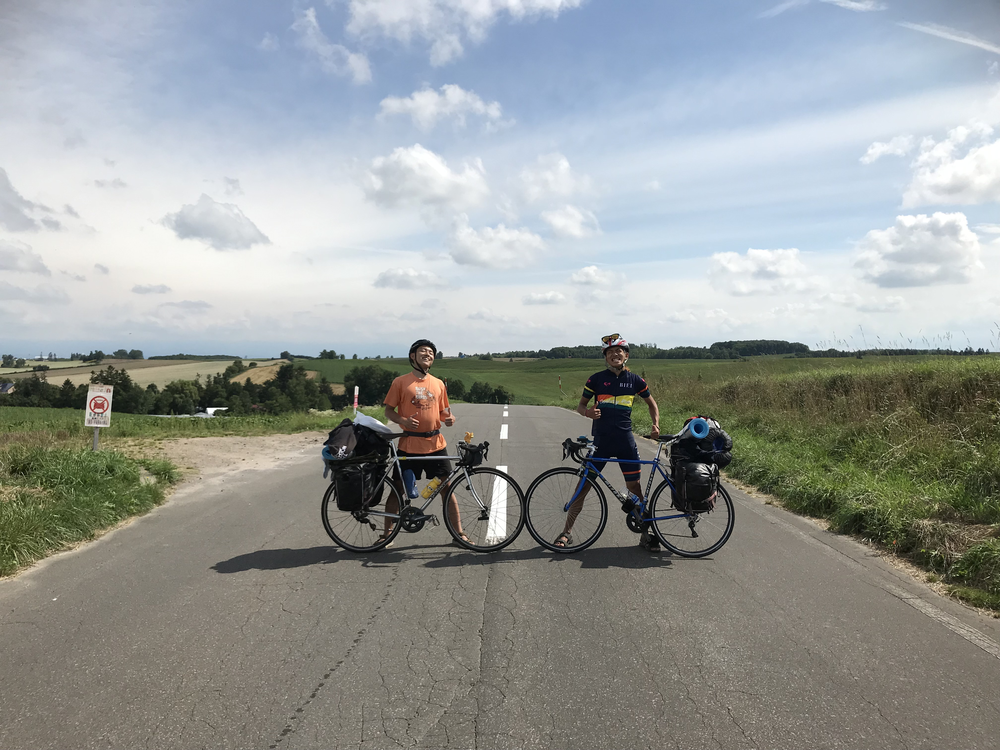
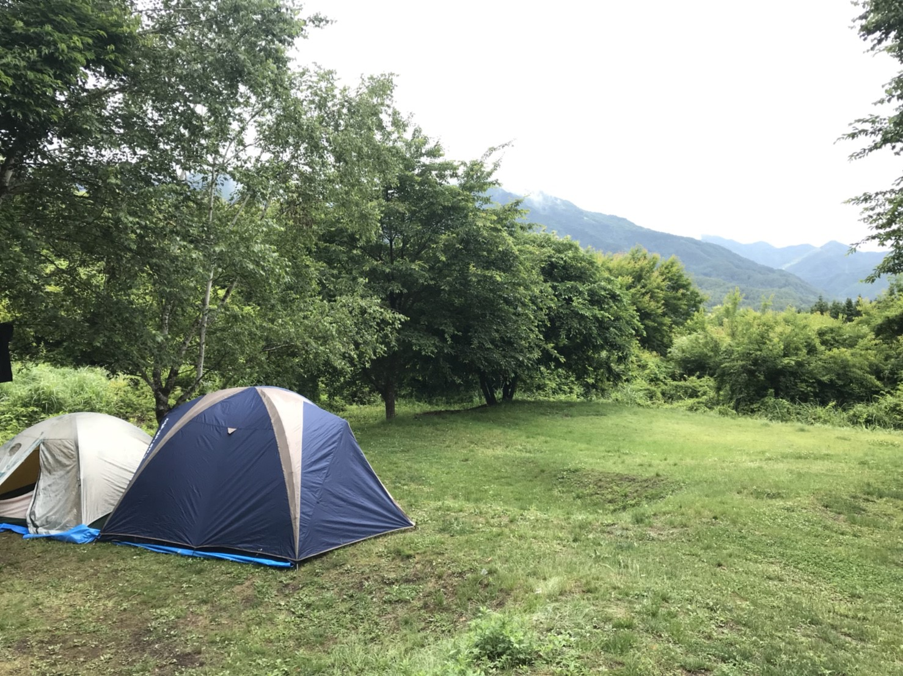

創価大学サイクリング部 合宿の軌跡
創価大学 サイクリング部の合宿の軌跡を残していくよ。北海道合宿
札幌市からスタート(人によっては八王子スタート!) して、
夕張→富良野→旭川→名寄→クッチャロ湖→稚内→初山別→秩父別→札幌
と、道北を楽しむコースだ！
都市間の何もなさでは日本一の北海道で自然と闘いながらサイクリングしていくぞ！

筆者の実家が合宿のスタート地点となっていた。
富良野で出来立てのﾋﾟｯﾂｧを頬張る部員。グルメも楽しんでこそのサイクリングだ！

美瑛町の美しさに舞う部員。
旭川市の北鎮記念館で社会見学をする部員。各地の博物館や記念館を回るのも合宿の醍醐味だ！
まさかの大雨と寒さにただただ耐える部員。全ての日程で晴れてるいれば良いのに...


雲行きが怪しくても、立ち止まっている暇はないのだ...!
最北端のライダーズハウス : みつばちの家。 この写真を撮影した年が最後の営業だったという。
秩父別にて、鐘の音に叩き起こされる朝。前情報無しだったので、非常に焦った。
こうして、北海道の各地を自転車で回り、たくさんのことを学び、経験しながら部員たちは成長していくのである...!
四国合宿
３月後半から始まる春合宿は、南の方へ向かう。暖かいからね...
この時行ったのは
香川県→徳島県→高知県→愛媛県
と四国を回る旅。お遍路さんと呼ばれる人たちや、地元の方々との沢山の出会いを経ながら旅をしたぞ！
香川県で電車を降りて走り出し、徳島県に到着。道中でお遍路さんに出会いパシャリ！
これからの旅の安全を祈って、再び旅路へと戻るのであった。
お遍路さんだけでなく、地元の方の応援も！飲み物を頂いて、体だけじゃなく心もエネルギーチャージ...!
といったものの、やっぱり疲れはたまっているもの。休憩中のコンビニで倒れるように眠ってしまった部員。
四国の海岸線はアップダウンが激しいので体力はごっそりもっていかれるぞ！
朝起きたら部員のテントが水浸しになっていた...! テントの中から出てきたT氏の「おはようございます」は哀愁を帯びていた...
高知県の海はとってもきれい！沖縄かと思った...
高知県の四万十川は本当にきれいな川で、その川の水が流れ着く海もまた最高にきれいになるのだとか。
愛媛県に到着！あの有名な『道後温泉』で入浴。(90分で1,000円と、思ったより高いやん...!)
かなり良い思い出になりました(-ω-)/
最後は『しまなみ海道』を渡って「広島県尾道市」に！
せっかくここまできたら、「広島お好み焼き」を楽しまずに帰るなんてもったいない！
入ったお店のお客さんと今回の旅のお話をしたら「よく来たなあ！」と言って、お好み焼きをご馳走になってしまった！ありがとうございます...!
3月の下旬の合宿になると、帰る頃には桜が満開になっていく...! 今回は四国の合宿だったけど、中国・関西だと桜前線とともに北上するという贅沢な合宿もできるぞ！
グンマー合宿
初めての海外合宿（大嘘）ということで気合の入る活動だったのを覚えている。
この合宿は 1泊二日 で行われた短期的な合宿であり、本合宿の練習という意味合いを込めて『プレ合宿』と呼ばれている。
この時は留学生２名が参加してくれ、とても充実していたぞ！
天候は優れていなかったが、それでも笑顔で走り続ける部員。楽しんで走ることが一番大切なのである！
特に山奥での走行になるので、荷物の重さもプラスされて普段の何倍もつらいぞ！笑顔を絶やさないことが大切！

合宿ではテントを使ったキャンピングが基本！ご飯も勿論、現地で自炊！おいしくできると気もあれば、食べられるだけの何かが生まれるときもある。
二日目は快晴！朝ごはんはみんなの笑顔が消えるレベルでまずかったけど、天気が良いとそれも吹っ飛ぶ！

ただ走るだけではなく、現地のアクティビティを楽しむのも醍醐味。自転車の旅だからこそ、道中の突発的なアクティビティがあるぞ！
動物園からご当地グルメまで、色んな事を楽しみながら走ろう！
自転車で登る標高1000m超え！ここまでの頑張りをかみしめる瞬間だ！
帰りは群馬県から八王子市へ電車で移動。『輪行袋』にホイールを外した自転車を入れて電車に乗車。いざ八王子へ。
しかし、乗り換えという地獄が待っているのであった...